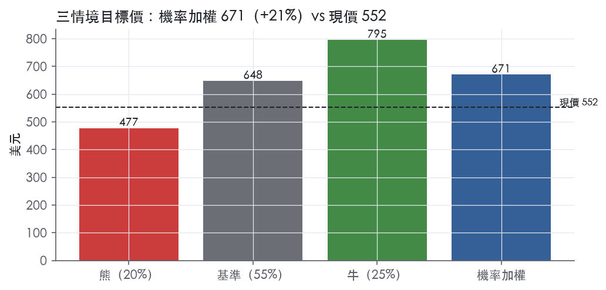
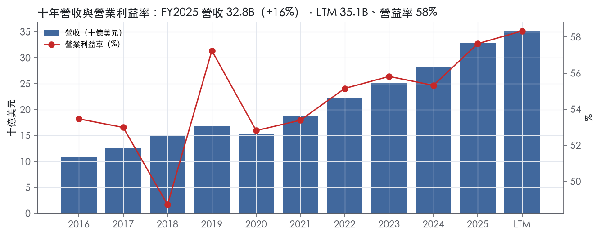
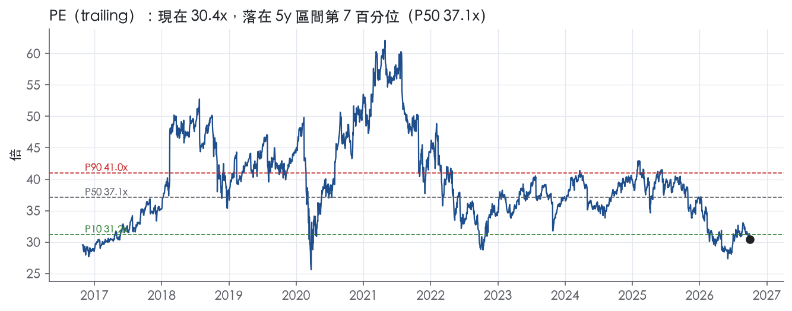
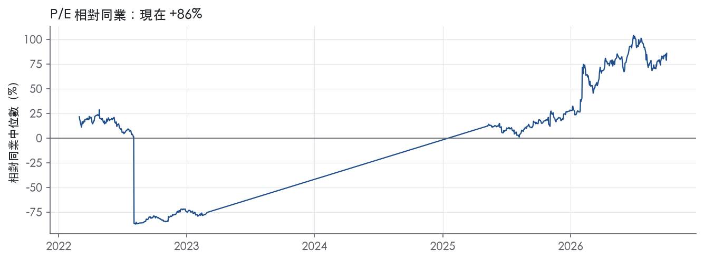
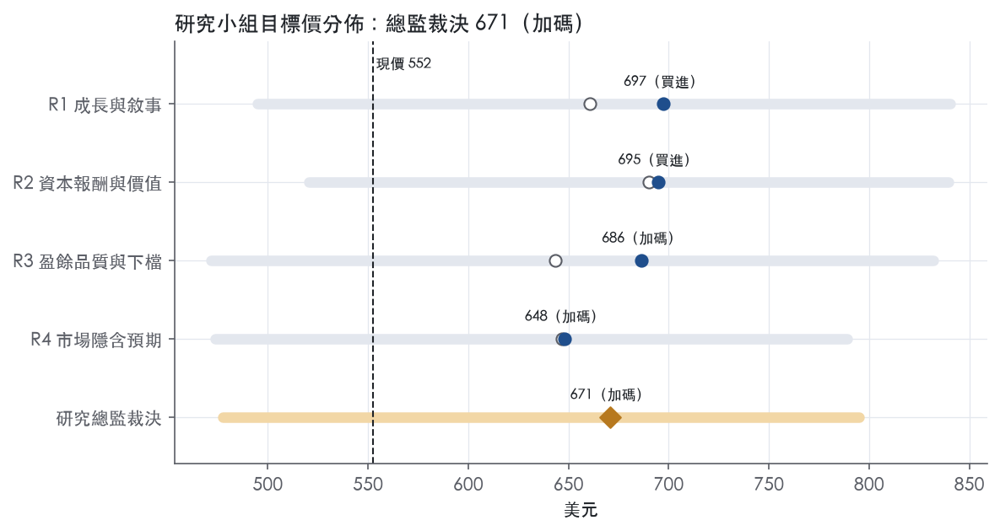
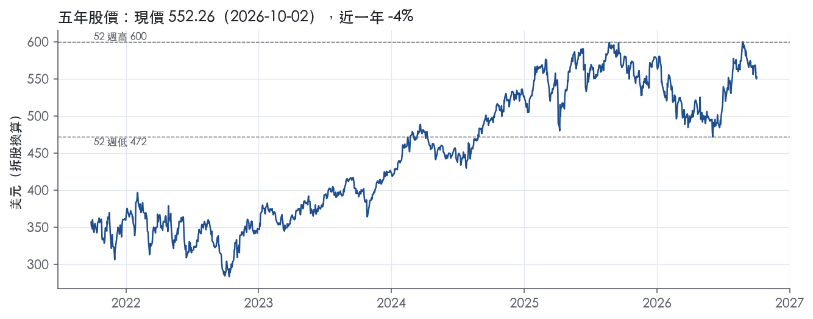

評等總表 › 金融 › MA
盈餘小幅上修、倍數小幅回升，偏多加碼｜評等 加碼｜目標價 671
| 評等 | 加碼 |
| 12 個月目標價 | 671 美元 |
| 現價 | 552.26 美元（2026-10-02） |
| 預期報酬 | 股價 +21.4%＋股息 0.6%＝總報酬 +22.1%；同業籃門檻 10.2%，超額 +11.8% |
| 估值方法 | P/E 27.0x，套在第 5–8 季的EPS（也就是一年後的未來四季） |
| 三情境 | 熊 477／基準 648／牛 795 |
| 研究流程 | 四位研究員兩輪辯論＋研究總監裁決 |
| 資料來源 | SEC EDGAR XBRL、Tiingo、FRED（全免費） |
盈餘小幅上修、倍數小幅回升，偏多加碼（研究總監裁決，四位研究員兩輪辯論後）
評等 加碼｜12 個月目標價 671 美元（總監三情境機率加權 651 與研究員中位數 691 各半）｜現價 552.26（2026-10-02）
預期報酬：股價 +21.4%＋股息 0.6%＝總報酬 +22.1%。同業籃門檻 10.2%，超額 +11.8%。
估值方法：P/E 27.0x，套在第 5–8 季的EPS（也就是一年後的未來四季）。三情境：熊 477（20%）／基準 648（55%）／牛 795（25%）。
什麼會讓研究總監改變看法：Q3、Q4 匯率中性成長跌破10%或GAAP營益率年減，我會回到利潤率持平、倍數降到25.9x以下並轉中性；Reg II上訴撤銷上限且路由法案無進展，我會把基準倍數上調到前瞻帶P10 28.9x。
| 過去四季（實際，FY2026Q2） | 未來四季 | 第 5–8 季 | 第 9–12 季 | |
|---|---|---|---|---|
| 營收（B） | 35.1B | 39.3B | 43.6B | 47.1B |
| 營收成長 | 16.0% | 12.0% | 11.0% | 8.0% |
| 營業利益率 | 58.3% | 59.0% | 59.5% | 59.5% |
| EPS（美元） | 18.14 | 20.88 | 24.01 | 26.60 |
| EPS 成長 | 22.6% | 15.1% | 15.0% | 10.8% |
| 每股股息（美元） | 3.37 | 3.37 | 3.37 | 3.37 |
| P/E（現價） | 30.4x | 26.4x | 23.0x | 20.8x |
| 股息殖利率（現價） | 0.6% | 0.6% | 0.6% | 0.6% |
過去四季為申報數字；預測為研究總監的假設、程式計算。倍數與殖利率都用現價計算，用來看現價對應各期獲利的高低。
| 情境 | 機率（歷史） | 故事 | 未來四季營收成長 | 第 5–8 季營益率 | 倍數 | 目標價 | 股價漲跌 |
|---|---|---|---|---|---|---|---|
| 熊 | 20%（21%） | 對應風險表第1條（信用卡路由強制令立法、Reg II上訴下修上限）與第5條（讓利擴大），成長跌破反推DCF隱含12.3%，倍數壓到前瞻帶之外 | 9.0% | 57.5% | 22.0x | 477 | -13.5% |
| 基準 | 55%（55%） | 匯率中性12%成長、GAAP營益率升至59.5%後持平、稅率19.7%、回購維持近三年步調，市場對已實現利潤率付27x | 12.0% | 59.5% | 27.0x | 648 | 17.4% |
| 牛 | 25%（24%） | 加值服務占比上升帶動營運槓桿加速、Reg II上訴撤銷上限，倍數回到P10–P50之間但不假設利率回落 | 14.0% | 61.5% | 31.0x | 795 | 44.0% |
目標價由程式依研究總監的驅動與倍數計算；機率由研究總監給定。括號內是歷史頻率：把這檔股票過去十年 12 個月報酬的波動形狀，置中在基準情境，結果落在各情境附近的比例。

四位研究員用不同方法各自估值，回應研究總監的質疑後交出第二輪，最後由總監逐點裁決。各研究員的主張見第七章，裁決理由見第八章，完整論證見《研究底稿》。
| 立場（一輪→二輪） | 加權目標價（一輪→二輪） | 評等（一輪→二輪） | 第二輪倍數 | 熊～牛目標價 | |
|---|---|---|---|---|---|
| R1 成長與敘事 | 看多→看多 | 661→697 | 加碼→買進 | 29.0x | 495～841 |
| R2 資本報酬與價值 | 看多→看多 | 690→695 | 買進→買進 | 29.0x | 520～840 |
| R3 盈餘品質與下檔 | 看多→看多 | 643→686 | 加碼→加碼 | 30.0x | 472～832 |
| R4 市場隱含預期 | 看多→看多 | 647→648 | 加碼→加碼 | 27.0x | 474～789 |
| 研究總監裁決 | 看多 | 671 | 加碼 | 27.0x | 477～795 |
目標價由程式依各自的驅動與倍數計算；評等＝機率加權總報酬 − 同業籃門檻。
Mastercard 是一家全球支付科技公司，本質上是連接發卡行、收單行、商家、政府與消費者的四方支付網路運營商，而不是銀行或放款人¹。公司明確聲明不發卡、不提供循環信用、不決定或收取發卡行向持卡人收取的利率或費用，也不設定收單行向商家收取的費率，帳戶關係歸屬並由客戶（即金融機構）管理¹。公司的角色是透過全球支付網路對交易進行授權、清算與結算（switch），並疊加安全、數據與加值服務¹。FY2025 淨營收 32.79B，LTM 營收 35.08B，客戶對象是金融機構、商家、政府、金融科技公司與其他機構組織，終端使用者則是全球消費者與企業。Mastercard 與 Visa、American Express、銀聯、JCB、Discover 等同為跨境與境內切換交易的核心基礎設施提供者之一，其護城河來自網路效應與品牌授權的特許經營（franchise）模式。
Mastercard 將淨營收分為兩大類：支付網路（payment network）與加值服務及解決方案（value-added services and solutions），10-K 未按分部單獨揭露各自占比與毛利結構¹。支付網路收入主要來自依 GDV（含境內與跨境交易量）向客戶收取的費用，以及切換服務相關費用¹。加值服務則涵蓋安全解決方案、消費者獲取與互動服務、商業與市場洞察、數位與身分驗證、處理與閘道以及其他解決方案（含 ACH 批次與即時帳戶支付、開放金融）¹。從最近兩季新聞稿揭露的成長速度看，加值服務成長明顯快於支付網路：FY2026Q1 支付網路淨營收年增 12%（currency-neutral 8%），加值服務淨營收年增 22%（currency-neutral 18%）²；FY2026Q2 支付網路淨營收年增 10%（currency-neutral 8%），加值服務淨營收年增 20%（currency-neutral 18%）³。這意味著加值服務正在成為營收成長的主引擎，但 10-K 未單獨揭露該分部占總營收的具體百分比，無法精確拆解。
從品牌卡量與交易量規模看，FY2025 Mastercard 品牌消費信用 GDV 3,878B，占總 GDV 37%，卡量 1,083M 張（年增 3%）¹；消費借記與儲值 GDV 5,349B，占總 GDV 50%，卡量 2,134M 張（年增 11%）¹；商業信用與借記 GDV 1,405B，占總 GDV 13%，卡量 174M 張（年增 14%）¹。消費借記與儲值是規模最大、卡量成長最快的區塊，商業卡量成長率最高但基數仍小。公司也經營 Mastercard Move 跨境匯款與撥款平台，觸及全球超過 17B 個收款端點（payout endpoints），橫跨 60 多個發送國與 155 個接收國¹。安全解決方案方面，公司在 2025 年約 40% 的 Mastercard 交易已實現代碼化（tokenized）¹。
客戶是全球金融機構、商家、政府、數位夥伴與企業，公司透過直接銷售團隊、全球客戶團隊，以及嵌入科技平台、系統整合商、處理商與其他網路的方式分銷服務與解決方案¹。公司在超過 150 種貨幣、超過 220 個國家與地區為客戶執行交易切換，切換超過 70% 的 Mastercard 與 Maestro 品牌卡交易，幾乎涵蓋所有跨境交易¹。地區層面，10-K Item 1 未揭露各地區營收占比，僅在財務報表附註中有分地區數據，本章未取得對應 fact id，不展開細分。員工結構顯示公司全球化程度高：截至 FY2025 底約 39,800 名員工，其中約 70% 位於美國以外、分布於超過 90 個國家，另有約 6,000 名約聘人員¹。FY2025 人力總成本 7.3B 美元，主要為薪酬、福利及相關人事費用¹。
FY2025Q3 營收 8.60B，年增 16.7%，營益率 58.8%【判，數字取自資料包】。FY2025Q4 營收 8.81B，年增 17.6%，但營益率季減至 55.8%（bs/）【判，數字取自資料包】。FY2026Q1 淨營收 8.4B，較去年同期增加 16%（GAAP）、12%（currency-neutral），淨利 3.9B，稀釋 EPS 4.35 美元，營益率 58.4%，年增 1.2 ppt²；當季經營費用因第一季重組費用年增 13%（currency-neutral 10%）²；GDV 季內以本地貨幣計年增 7%、跨境交易量年增 13%、切換交易量年增 9%²；CEO 稱「Mastercard 多元化、面向未來且持續交付」，並提及透過收購 BVNK 擴大穩定幣解決方案佈局²。FY2026Q2 淨營收 9.3B，年增 14%（currency-neutral 12%），淨利 4.4B，稀釋 EPS 4.97 美元，營益率 60.2%、年增 1.5 ppt³；GDV 年增 8%、跨境交易量年增 12%、切換交易量年增 9%（本地貨幣計）³；CEO 稱「我們交付超預期表現，淨營收年增 14%」，並提及墨西哥與阿聯酋的新合作夥伴關係及市場首創的 Agentic Payment 能力³。公司兩份新聞稿均未提供下一季具體財務指引數字。股東回報方面，FY2026Q2 單季回購 9.8M 股、花費 4.9B 美元，並支付股息 771M 美元，截至 7 月 27 日已回購 1.3M 股、花費 0.7B 美元，剩餘回購額度 7.8B 美元³。
公司策略三大優先順位為「消費者支付」「商業與新支付流」「服務與其他解決方案」，三者彼此強化、互相依賴¹。消費者支付聚焦於現金替代（cash displacement）這一長期結構性機會，透過擴大受理範圍、進入未滲透的卡類垂直市場（如繳費）與即時帳戶型支付來捕捉增量交易¹。商業與新支付流聚焦企業點對點採購、發票型付款，以及透過 Mastercard Move 平台規模化撥款與匯款業務¹。服務與其他解決方案則透過安全、數據洞察、身分驗證等能力差異化支付產品，並擴大服務範圍以觸及新客戶與新購買中心¹。公司在 2025 年的關鍵新進展包括推出 Mastercard Agent Pay（面向代理型商務的支付框架，2025 年美國全面上線、2026 年初全球上線）、約 130 個加密貨幣聯名卡計畫，以及將穩定幣嵌入 Mastercard Move 平台¹。公司也強調六大「賦能要素」：人才、品牌、數據與 AI、技術、特許經營模式與「做好事也做對事」的永續定位¹。
就我方判斷，加值服務與解決方案的雙位數高成長（currency-neutral 18% 上下）正在稀釋支付網路業務對景氣循環（消費支出、跨境旅遊）的敏感度，是估值溢價的主要支撐。穩定幣與代理型商務（agentic commerce）布局是公司明確點名的中期敘事，但尚未反映在可量化的營收貢獻中，需觀察 2026 年全球上線後的採用速度。FY2026Q1 出現的重組費用顯示公司在加速投資的同時仍在控管營業費用結構，值得留意後續季度營益率是否持續擴張。

Mastercard 的護城河評為寬，趨勢穩定：四方網路的雙邊網路效應、全球品牌，以及嵌入發卡行與商家流程的轉換成本，讓我們有把握未來 10 年以上 ROIC 持續高於資本成本。帳戶對帳戶即時支付、利率與交換費監管這兩股力量都是真實的威脅，但 10 年內不足以把 ROIC 壓到資本成本附近，所以我們不給「變窄」。
網路效應是核心來源，網路一端的發卡量與另一端的受理點互相拉抬。公司的網路串連全球發卡行與收單行，讓持卡人能在「數以億計」的受理地點與數位接點使用產品¹。交易涵蓋超過 150 種貨幣、超過 220 個國家與地區¹。公司切換超過 70% 的 Mastercard 與 Maestro 品牌卡交易，其中包含幾乎全部的跨境交易¹。FY2025 消費借記與儲值卡 2,134M 張、消費信用卡 1,083M 張、商業卡 174M 張¹。新進者要同時在全球複製發卡端與受理端，才有機會跟它競爭，這就是雙邊網路難以被攻破的原因。
網路效應還有一層數據上的強化。公司自述，支付規模擴大會帶來更多交易與數據，數據再做成服務，進而幫助贏得新約與續約¹。這代表網路效應已從「受理範圍」延伸到「數據與服務品質」。
無形資產：品牌與規則制定權。「Priceless®」已經營將近 30 年，起初是在超過 120 個國家推出的廣告活動，後來演變成更廣的品牌平台¹。透過特許經營模式，公司為所有網路參與者訂定技術、營運與財務標準¹。公司（或金融機構）也負責設定「預設交換費」¹。規則制定權本身就是一種授權型無形資產，競爭者無法透過低價取得。
轉換成本：代碼化與加值服務把客戶綁在網路上。2025 年約 40% 的 Mastercard 交易已經代碼化¹。到 2025 年底，公司的虛擬卡技術已嵌入超過 10 個全球 B2B 與差旅費用平台¹。代碼、驗證、詐欺評分與代行授權（Stand-In）都深度嵌入發卡行的營運流程，發卡行若要換網路，就必須重建整套流程，切換成本遠高於表面上的費率差。
成本優勢與效率規模沒有足夠的直接證據，本章不列入。
數字強力支持寬護城河：在 ROIC 有資料的 9 年中，9 年都高於資本成本。十年平均 ROIC 93.3%，資本成本代理值 10.2%，兩者差距 83.1%。
利潤率的穩定度同樣符合寬護城河的特徵。營益率十年平均 54.3%，標準差只有 2.5%，最低 48.7%、最高 57.6%。FCF 利潤率平均 46.0%，標準差 3.9%。FY2020 營收從 16.88B降到 15.30B，當年營收成長是十年最低的 -9.4%，但 ROIC 仍維持 81.5%（量化底稿年度值），遠高於資本成本。
數字上有兩處跟主張衝突，需要說明：
資料包沒有毛利率數據，所以無法驗證毛利層面的定價權，本章的判斷以營益率與 ROIC 為準。
最大的侵蝕力是帳戶對帳戶即時支付繞過卡組織網路，在政府主導的即時支付市場尤其明顯。公司已經在數個國家營運即時支付基礎設施，也推出 Mastercard Account-to-Account Protect，結合詐欺防護與爭議處理框架¹。這是一種對沖，讓公司在新支付軌道上仍有收費角色，但新軌道上的單筆經濟效益很可能低於卡交易。
第二個風險是監管：交換費與網路規則一旦被立法限制或強制開放路由，規則制定權的價值就會被削弱。第三個風險是本地網路與大型科技錢包分流境內交易。這些風險比較可能侵蝕境內交易，跨境切換的網路效應最難被替代。最後，穩定幣與代理型商務是潛在的繞道路徑，但公司已透過約 130 個加密貨幣聯名卡計畫及 Agent Pay 把這些流量導回自己的網路¹。
寬護城河加上十年 ROIC 從未跌破資本成本，支持目標倍數相對一般支付與商業服務同業取得溢價，相對 Visa 則大致持平，因為兩者的護城河結構相同。目前倍數已低於五年 P/E 的 P10 31.2x，也低於五年中位數 37.1x。我們認為這段折價反映的是利率環境與 A2A 的不確定性，而不是護城河受損；只要營益率維持在十年區間內，目標倍數可以朝五年中位數回歸。
| 指標 | 最新 | 十年平均 | 標準差 | 最低 | 最高 |
|---|---|---|---|---|---|
| ROIC | 93.9% | 93.3% | 17.7% | 74.7% | 129.2% |
| 營業利益率 | 57.6% | 54.3% | 2.5% | 48.7% | 57.6% |
| FCF 利潤率 | 52.3% | 46.0% | 3.9% | 39.4% | 52.3% |
| ROE | 210.5% | 141.2% | 42.0% | 70.4% | 210.5% |
程式計算。資本成本代理值（10 年債＋5%）：10.2%；ROIC 平均減資本成本：83.1%；ROIC 有資料的 9 年中，高於資本成本 9 年。
Mastercard 的盈餘品質計分表八項全綠、僅應收帳款成長一項為黃燈，且該黃燈低於紅線（+5.7pp vs 15pp 門檻）（計分表）。營業現金流／淨利 LTM 1.07x、近三年 1.13x、十年平均 1.14x，三個窗期都站在「現金支撐盈餘」的綠區之上（計分表）。槓桿低、利息保障高、股東回饋透過回購持續減少股數，整體屬於可信度高的報表（計分表）。
現金流量連續十年都比淨利更大，不是單季的好看而已。LTM 營業現金流／淨利 1.07x、自由現金流／淨利 1.03x，三年平均分別為 1.13x 與 1.10x，十年平均 1.14x 與 1.09x，三個時間窗沒有一個跌破綠燈門檻（計分表）。應計比率（淨利減營業現金流除以平均總資產）LTM 為 -2.1%，近三年 -3.8%，十年平均 -3.3%，全部是負值，代表盈餘不是靠應計項目堆出來、而是現金流量貢獻大於帳列淨利（計分表）。FY2025 全年 CFO 17.65B、FCF 17.16B，對應淨利 14.97B，現金面比帳面淨利高出約 2.7B（資料包年度表）。
FY2025 全年 GAAP 淨利 15.0B、GAAP 稀釋 EPS 16.52，非 GAAP 調整後淨利 15.4B、調整後稀釋 EPS 17.01，調整項目為權益投資損益、特殊項目（Special Items）與外匯影響¹。Q2 2026 GAAP 淨利 4.4B、GAAP EPS 4.97，調整後淨利 4.5B、調整後 EPS 5.04，同樣排除權益投資損益、當季特殊項目與匯率換算／交易影響及相關避險合約效果³。2026 年至今（YTD）GAAP 淨利 8.3B、EPS 9.32，調整後淨利 8.6B、調整後 EPS 9.64，差距主要來自「2026 年第一季的重組費用（restructuring charge），部分被較低的訴訟準備金抵銷」³。重組費用是真實現金成本，不是會計口徑雜訊，估值時不應該被完全加回。整體來看 GAAP 與非 GAAP 的差距僅約 3–4%，調整幅度不大，顯示公司盈餘本身已經相對乾淨，不是靠大量「一次性剔除」墊高非 GAAP 數字。
淨負債／EBITDA LTM 0.62x，近三年平均 0.50x，十年平均 0.27x，雖然逐年緩步上升但仍遠低於 1.50x 綠燈門檻（計分表）。利息保障倍數 LTM 27.4x，三年平均 24.9x，十年平均 33.1x，付息能力沒有壓力（計分表）。值得留意的是總債務從 Q1 2026 的 18.96B 跳升至 Q2 2026 的 24.64B，現金同期也從 7.91B 升到 11.29B（資料包季表），兩者同向擴張，判斷為舉債建立流動性／資本操作而非財務壓力所致，但後續季度若總負債持續墊高、淨負債／EBITDA 逼近 1.0x 以上，須重新檢視。資本配置上，FY2025 公司回饋股東 14.5B，其中回購 11.7B、股利 2.8B，對應 CFO 17.6B¹；（股利＋回購）／淨利 LTM 115.3%，近三年 100.3%，代表公司回饋股東金額持續超過當期淨利（計分表），但因槓桿極低、現金流穩定覆蓋，尚未構成「舉債發股息」式的風險。Q2 2026 單季回購 980 萬股、花費 4.9B，支付股利 771M，季後至 7/27 再回購 1.3M 股、0.7B，剩餘核准額度 7.8B³。稀釋股數年變動 LTM -1.1%，近三年 -2.3%，十年平均 -2.1%，回購確實持續壓低股數（計分表）。
應收帳款成長 − 營收成長（FY2025）+5.7pp，黃燈：程式規則是 ≤5pp 綠、>15pp 紅，本案落在黃區但遠低於紅線。公司在財報新聞稿中揭露，支付網路的回饋與誘因（rebates and incentives）成長速度持續快於淨營收，Q2 2026 年增 22%（currency-neutral 20%），YTD 年增 22%（currency-neutral 19%），均明顯快於淨營收 14–15% 的成長率³。誘因與回饋在會計上常以淨額法認列並牽涉應收／應付結算時點，成長速度領先營收是可以用「給客戶的誘因加碼」直接解釋的營運現象，不是收入認列或催收品質惡化的訊號。由於現金轉換（CFO/NI、FCF/NI）與應計比率同期仍全部維持綠燈，顯示這筆應收成長並未實質侵蝕現金轉換效率，判斷為可解釋、非真正的盈餘品質問題。
其餘七項（現金轉換、應計比率、SBC／營收、槓桿、利息保障、股數稀釋、股東回饋）皆為綠燈：程式未標出紅旗，數字本身也支持「現金持續支撐盈餘、SBC 未膨脹獲利、槓桿可控」的結論，不需額外解釋（計分表）。
估值可以用 GAAP 盈餘做基礎，不需要大幅打折，因為 GAAP 與非 GAAP 的差距僅 3–4%、且主要調整項（重組費用）本質上是真實成本而非一次性會計雜訊。現金轉換全數綠燈、應計比率連續為負，支持用 GAAP EPS（FY2025 16.52、LTM 18.14）直接作為估值輸入，而非一律套用非 GAAP 調整後數字。槓桿（淨負債／EBITDA 0.62x）與利息保障（27.4x）都遠離風險區，不構成對目前倍數的限制，真正該關注的是股價已處於五年與十年估值帶的個位數分位（P/E 5y 分位 6.6%、EV/EBITDA 5y 分位 5.3%），顯示市場已經先一步壓縮了倍數，而非盈餘品質本身需要額外折價。
| 項目 | LTM | 近三年 | 十年 | 燈號 | 規則 |
|---|---|---|---|---|---|
| 營業現金流／淨利 | 1.07x | 1.13x | 1.14x | 綠 | ≥1.00x 綠、<0.80x 紅 |
| 自由現金流／淨利 | 1.03x | 1.10x | 1.09x | 綠 | ≥0.90x 綠、<0.60x 紅 |
| 應計比率（(淨利−CFO)／平均總資產） | -2.1% | -3.8% | -3.3% | 綠 | ≤0.0% 綠、>5.0% 紅 |
| SBC／營收 | 1.8% | 1.8% | 1.6% | 綠 | ≤3.0% 綠、>8.0% 紅 |
| 淨負債／EBITDA | 0.62x | 0.50x | 0.27x | 綠 | ≤1.50x 綠、>3.00x 紅 |
| 利息保障倍數（營業利益／利息） | 27.4x | 24.9x | 33.1x | 綠 | ≥8.00x 綠、<3.00x 紅 |
| 稀釋股數年變動 | -1.1% | -2.3% | -2.1% | 綠 | ≤0.0% 綠、>3.0% 紅 |
| （股利＋回購）／淨利 | 115.3% | 100.3% | 101.7% | 綠 | ≥50.0% 綠、<0.0% 紅 |
| 應收帳款成長 − 營收成長（FY2025） | +5.7pp | — | — | 黃 | ≤5pp 綠、>15pp 紅 |
程式計算；燈號以 LTM（無則近三年平均）判定。
| 風險 | 觸發指標（看什麼數字、在哪裡看） | 對 EPS 的影響方向與粗略幅度 | 未來 12 個月發生機率（高／中／低） | 出處 |
|---|---|---|---|---|
| 1. 利差費率監管與訴訟（美國 Durbin Amendment 訴訟、EU 消費信用/借記利差上限、紐西蘭跨境利差上限 2026 年 5 月生效） | 看美國聯邦地區法院對 Regulation II 利差上限的最終判決、紐西蘭 Commerce Commission 上限生效後跨境交易量與費率變化、季報「payment network net revenue」成長率 | 方向：負向；幅度：中（payment network 是淨營收主要組成，公司未拆分占比） | 高 | ¹⁴ |
| 2. 巴西央行 PSO 新規擴大結算擔保範圍，完成期限 2026 年 11 月 | 看巴西央行是否核准 Mastercard 提交的治理與風險管理框架、公司是否揭露新增的結算擔保敞口（settlement exposure）金額 | 方向：負向；幅度：中，影響資本緩衝與潛在信用成本，非直接 EPS 項目但衝擊資產負債表彈性 | 高（規定已生效，僅待框架核准） | 10-K 年報 FY2025 Item 1（業務） |
| 3. 政府保護主義與本地/政府支付基建替代（DPI、PIX、UPI、FedNow、CBDC） | 看公司揭露的境內切換交易量（switched transactions）成長率是否落後跨境交易量、特定市場（南非、巴西、印度）是否新增強制境內切換或數據本地化法規 | 方向：負向；幅度：中大，長期侵蝕境內市占，但短期難以量化 | 中 | 10-K 年報 FY2025 Item 1A（風險因素） |
| 4. 隱私/資料/AI 監管碎片化加合規成本，以及資安事件強制揭露（SEC 8-K 四個工作日規則、GDPR） | 看是否出現重大資安事件 8-K 公告、看 G&A 費用中合規相關支出成長率是否持續高於營收成長（如 FY2026Q2 G&A 驅動營業費用增 10%） | 方向：負向；幅度：中（尾部風險事件可能一次性大幅衝擊，常態合規成本則緩慢侵蝕營益率） | 中 | ⁴³ |
| 5. 競爭加劇（金融科技、數位錢包、穩定幣/加密貨幣、一般支付網路對手） | 看切換交易量（switched transactions）年增率是否放緩、看加值服務淨營收成長率是否維持 currency-neutral 18% 上下的高速（FY2026Q2 為 18%）、看穩定幣聯名卡計畫數（2025 年約 130 個）是否持續擴張 | 方向：負向（長期份額流失）；幅度：中，短期內公司藉由加值服務成長部分抵銷 | 中 | ¹³ |
利差費率監管與訴訟是現在進行時，不是假設情境。美國兩個聯邦地區法院在 2025 年 8、9 月對 Regulation II 利差上限做出相互矛盾的判決，一個撤銷上限、一個維持上限，目前上限在訴訟持續期間仍有效¹。同時歐盟對消費信用與借記利差設有上限、美國有提案要擴大路由強制令到信用卡、紐西蘭 Commerce Commission 已核准對多數卡類交易的跨境利差上限，自 2026 年 5 月生效¹。公司明確點名「債務卡監管可能引導至信用卡監管」的擴散風險⁴。這條風險的殺傷力在於它直接打在 payment network 的收入結構上，而這是公司淨營收的核心組成，但 10-K 未拆分兩大類別占總營收的具體百分比，無法在此量化幅度。
巴西 PSO 新規是一個有明確截止日期、可監測的風險。2025 年 11 月巴西央行對所有 Payment Scheme Operators（包含 Mastercard 與 Visa）發布新規，要求支付網路將結算擔保擴大至此前未擔保的交易類型（例如商家分期付款交易），且要求 PSO 提交對應的治理與風險管理框架供央行審核，完成期限預期在 2026 年 11 月¹。這直接擴大公司的 settlement exposure（結算擔保敞口），雖然不是立即的損益表項目，但若框架審核不過或巴西經濟惡化，擔保敞口擴大會增加潛在信用損失的尾部風險。
政府保護主義與本地支付基建的威脅是結構性、慢變量，但方向明確。公司自己列出南非等國強制境內切換，印度、中國、沙烏地阿拉伯等國推動數據本地化，以及巴西 PIX、美國 FedNow、印度 UPI 等政府/央行支持的數位公共基礎設施（DPI）正被視為傳統網路方案的替代品，各國央行也在探索央行數位貨幣（CBDC）⁴。這類基建一旦普及，會直接吃掉公司境內切換交易（switched transactions）的份額，而跨境交易因為網路效應較難被單一國家基建取代，所以短期衝擊會先出現在境內量，再慢慢擴散。
隱私/資料/AI 監管與資安事件揭露是合規成本與尾部風險的組合。公司在美國受 GLBA 資訊安全要求與不斷增加的州級資料法規約束，在歐盟受 GDPR 約束，且多國正把 GDPR 當作範本制定新規，監管環境被公司自己形容為「不斷演變、充滿不確定性」¹。此外公司受 SEC 規則約束，重大資安事件須在認定重大性後四個工作日內以 8-K 公告¹。這代表任何重大資安事件一旦發生，市場會在極短時間內拿到確認訊號，是少數真正「可監測」的尾部風險觸發點。常態性的合規成本則反映在 G&A 費用成長率上，FY2026Q2 營業費用成長 10% 主因即為「較高的一般與行政費用」³。
競爭加劇的來源很多元，但目前被加值服務成長部分抵銷。公司自己列出的對手橫跨傳統卡網路（Visa、美國運通、銀聯）、本地/債務網路、即時帳戶支付系統、數位錢包與金融科技、政府支持的 DPI，以及穩定幣與加密貨幣⁴。公司在 2025 年已布局約 130 個加密貨幣聯名卡計畫並將穩定幣嵌入 Mastercard Move¹，一定程度上是「與其被顛覆不如自己參與」的防禦性布局。短期內加值服務淨營收仍以 currency-neutral 18% 上下的速度成長（FY2026Q2 為 18%）³，暫時蓋過支付網路份額流失的壓力，但這個抵銷效果能持續多久無法從現有資料判斷。
返利與獎勵（rebates and incentives）成長速度持續超過淨營收成長，是對 payment network 淨收入的隱性侵蝕。 FY2026Q2 payment network rebates and incentives 年增 22%（currency-neutral 20%），遠高於同期淨營收成長 14%（currency-neutral 12%）³；年初至今（YTD 2026）rebates and incentives 年增 22%（currency-neutral 19%），同樣高於 YTD 淨營收成長 15%³。這個缺口若持續擴大，代表公司為了維持客戶續約與新客戶爭取，付出的激勵成本正在以比收入更快的速度增加，中期會壓縮 payment network 的淨收入成長空間，但 10-K Item 1A 並未把這列為一條獨立風險因子。
EU 2025 年 7 月修訂的系統重要性規範（SIPS）擴大適用範圍並新增網路韌性與外包風險管理細則，可能把更多合規義務套用到 Mastercard。 該修訂已擴大 SIPS 運營商的定義，使更多支付生態系公司被納入規範範圍¹，意味著公司在歐盟的監管密度只會增加不會減少，但公司在 Item 1A 的風險描述中偏重一般性論述，未具體量化此修訂對合規成本的增量，需靠後續季報的 G&A 費用趨勢驗證。
現價 552.26 對應 trailing（過去四季）P/E 30.4x、EV/EBITDA 23.1x、EV/EBITA —、EV/Sales 14.3x、FCF 殖利率 3.4%。主要估值倍數 P/E 現在 30.4x，落在5 年區間第 7 百分位（P10／P50／P90 = 31.2x／37.1x／41.0x）。

把程式的機械基準預測放到現價下，市場付的前瞻倍數是：P/E（未來四季） 25.9x、P/E（第 5–8 季） 22.9x。反推 DCF 顯示市價隱含未來五年營收年成長 12.3%（WACC 9.0%、終值成長 3.0%、FCF 利潤率 49.2%，SBC 不加回）。
| 倍數 | 現在 | 5 年 P10 | 5 年 P50 | 5 年 P90 | 現在分位 | 全期 P50 |
|---|---|---|---|---|---|---|
| P/E | 30.4x | 31.2x | 37.1x | 41.0x | 6.6% | 38.7x |
| EV/EBITDA | 23.1x | 23.8x | 28.5x | 32.7x | 5.3% | 29.6x |
| EV/EBIT | 24.5x | 25.3x | 30.3x | 35.0x | 5.1% | 30.6x |
| EV/Sales | 14.3x | 14.5x | 16.9x | 18.9x | 7.3% | 16.7x |
| P/S | 13.9x | 14.2x | 16.5x | 18.6x | 6.8% | 16.4x |
| P/FCF | 29.2x | 28.3x | 34.3x | 39.8x | 12.7% | 36.6x |
trailing 倍數（股價 ÷ 過去四季）；分位以每個交易日計算。
同業籃：ACN, AMTM, BABA, BR, ADV, ALIT（SIC 7389 同業 18 家中，CY2025 營收最接近的 6 家）。評等門檻 10.2%：同業「倍數不變下持有一年」的隱含報酬中位數（＝ FCF 殖利率 ×(1＋g)＋g，g 為 5 年營收年複合成長並夾在 −2%～8%），每家夾在 0～15%、P/E 低於 5 倍視為資料可疑而排除，中位數再限制在 10 年債到 10 年債＋5% 之間（同業原始中位數 15.0%）；排除：BABA（隱含報酬算不出來）。
| 代號 | 市值 | 5 年營收 CAGR | 營益率 | ROIC | P/E | 5 年 P/E 中位數 | EV/EBITDA | P/FCF | 隱含報酬 |
|---|---|---|---|---|---|---|---|---|---|
| MA | 487.6B | 16.5% | 58.3% | 93.9% | 30.4x | 37.1x | 23.1x | 29.2x | 11.7% |
| ACN | 122.4B | 9.5% | 14.5% | 31.1% | 15.9x | 27.5x | 9.8x | 9.7x | 19.1% |
| AMTM | 4.4B | 23.3% | 4.2% | 3.7% | 21.8x | — | 7.5x | 9.4x | 19.6% |
| BABA | — | -27.0% | — | — | — | — | — | — | — |
| BR | 17.9B | 8.4% | 17.4% | — | 16.4x | 34.0x | 14.4x | 14.0x | 15.7% |
| ADV | 0.4B | 2.3% | -3.2% | -5.1% | — | — | 20.4x | 3.0x | 35.9% |
| ALIT | 0.2B | -2.4% | -95.7% | -70.5% | — | — | — | 0.9x | 102.6% |
| 同業中位數 | 5.4% | 4.2% | -0.7% | 16.4x | 30.7x | 12.1x | 9.4x | 10.2% |
全部 trailing，程式以各公司 SEC XBRL 與 Tiingo 行情計算；第一列為本檔。
P/E 相對同業中位數：現在 85.8%，過去 1 年平均 58.7%、3 年 —、5 年 —；EV/EBITDA 相對同業中位數：現在 88.5%，過去 1 年平均 74.3%、3 年 19.4%、5 年 16.2%。

事後實現前瞻倍數帶（P/E，2018-08-17..2025-08-15）：P10／P50／P90 = 28.9x／32.6x／41.5x。它是每個交易日的股價除以之後四季實際實現的指標；一年後，今天的第 5–8 季正是那時的未來四季，所以這條帶是 12 個月目標價的同口徑倍數。因為用的是事後實際而非當時預期，過去成長超乎預期的公司這條帶會偏低。
程式的機械基準（成長率從過去四季年增率三年收斂到 6%、利潤率持平）用 事後實現前瞻 P/E P50 估值得到 785（42.1%），市場現行前瞻倍數（現價 ÷ 基準 未來四季指標）一年後持平，套在基準 第 5–8 季指標得到 623。這兩個數字只是參考點，不是本報告的目標價；研究員對這個定價的回應在第七章。
下表是每位研究員第一輪（各自獨立）與第二輪（回應研究總監的質疑後）的結果。目標價全由程式依各自的假設計算。
| 立場（一輪→二輪） | 加權目標價（一輪→二輪） | 評等（一輪→二輪） | 第二輪倍數 | 熊～牛目標價 | |
|---|---|---|---|---|---|
| R1 成長與敘事 | 看多→看多 | 661→697 | 加碼→買進 | 29.0x | 495～841 |
| R2 資本報酬與價值 | 看多→看多 | 690→695 | 買進→買進 | 29.0x | 520～840 |
| R3 盈餘品質與下檔 | 看多→看多 | 643→686 | 加碼→加碼 | 30.0x | 472～832 |
| R4 市場隱含預期 | 看多→看多 | 647→648 | 加碼→加碼 | 27.0x | 474～789 |
| 研究總監裁決 | 看多 | 671 | 加碼 | 27.0x | 477～795 |
目標價由程式依各自的驅動與倍數計算；評等＝機率加權總報酬 − 同業籃門檻。
分歧度：第一輪 加權目標價 643～690（區間＝現價的 8%）· 倍數 27～32x · 立場 看多×4（方向一致）；第二輪 加權目標價 648～697（區間＝現價的 9%）· 倍數 27～30x · 立場 看多×4（方向一致）。

| 研究員 | 第二輪主張 | 堅持的理由 |
|---|---|---|
| R1 成長與敘事 | 偏多，P/E 29 倍，錨在過去前瞻倍數區間的下緣 28.9 倍。 | 加值服務成長 18%，第三年營收成長仍給 10%，不降檔。 |
| R2 資本報酬與價值 | 偏多，P/E 29 倍，押倍數部分回到過去區間的下緣。 | ROIC 93.9% 沒有變差，P/E 不該低於區間下緣。 |
| R3 盈餘品質與下檔 | 偏多，P/E 30 倍，盈餘扎實，不取過去區間中位數 32.6 倍。 | 營益率用 GAAP 口徑，重組與訴訟費用每年都有，屬常態成本。 |
| R4 市場隱含預期 | 偏多，P/E 27 倍，介於現價對應的 25.9 倍與下緣 28.9 倍之間。 | 市場低估營益率：Q2 費用年增 10%，低於營收年增 14%。 |
每位研究員的逐條回應與完整論證見《研究底稿》（MA_研究底稿_2026-10-05.docx）。
| 分歧點 | R1 | R2 | R3 | R4 | 什麼資料會分出勝負 |
|---|---|---|---|---|---|
| 1. 基準目標倍數（eps@q5_q8） | 29x＝前瞻帶 P10，偏誤與利率相抵，EPS 加速撐回升 | 29x，P10–P25，ROIC 未變押部分回歸 | 30x，P10–P25；不取 P50 歸因利率 50%／監管 50% | 27x，市場持平 25.9x 與 P10 28.9x 之間，營益率確認後小幅回升 | Reg II 上訴與信用卡路由法案 12 個月內進度；Q3–Q4 財報後市場對已實現 EPS 付的前瞻倍數是否回到 28x 以上 |
| 2. Q5–Q8 營益率 | 59.5%（H1 GAAP 扣 Q4 季節性、保留部分 CN 槓桿） | 58.3%（回基準持平） | 58.8%（GAAP、特殊項目常態化） | 59.6%（CN 口徑每年 +0.4ppt） | FY2026Q4 GAAP 營益率對 55.8%；FY2026 全年對 57.6%；CN 費用成長是否仍低於營收 |
| 3. Q5–Q8 營收成長 | 11%（y1 12.5、y3 10） | 11%（y1 12、y3 8） | 10%（y1 12、y3 9） | 11%（y1 12.5、y3 10） | Q3–Q4 匯率中性淨營收成長；加值服務 CN 是否守 15%；支付網路 CN 是否跌破 8% |
| 4. 稅率與股數 | 19.7%／−2.3% | 17.9%／−2.9%（沿用基準） | 19.5%／−2.2% | 20.0%／−2.1% | FY2026 有效稅率；12 月董事會是否新增回購授權、Q3 回購金額 |
| 5. 熊情境倍數與機率 | 23x／21% | 25x／24% | 24x／20% | 22x／20% | 信用卡路由強制令是否進入院會；Reg II 上訴結果；跨境量是否連兩季 <5% |
1. 基準倍數：裁 R4，27x。 規則七的起點是市場倍數持平參考點 25.9x（套在基準 Q5–Q8 指標 → 623、總報酬 13.5%，機械基準模型）；現價已含 5.24% 的 10 年債，高於持平的每一倍都要有個股催化。四人都用利率解釋為何不到 P50（R3 直接給 50% 權重，R1 用利率抵銷偏誤）——沒有人把倍數壓到持平之下，這點合規；但利率只能解釋現價為何落在帶下方，不能解釋一年後往哪走，而曲線並未給回落路徑：2 年債 4.78% 高於聯邦基金 3.75%，市場定價的是緊縮。R1、R2、R3 押回前瞻帶 P10–P25（28.9x–30.3x，估值劇本）的共同缺口是沒有 12 個月內的催化：R2 的「ROIC 93.9% 未變」、R1 的「Q2 EPS +22%」³都已在現價裡，近一年股價 −4.3%（快照）正說明市場看著這些數字仍在壓倍數。三人共用的「事後實現帶偏低、故不應低於 P10」也不成立：這條帶是「價格 ÷ 之後實現 EPS」，我們的目標價同樣是「一年後倍數 × 我們預測（視同實現）的 Q5–Q8 EPS」，口徑一致，帶偏低只對拿當年共識定價的人成立。R4 的 27x 高於 25.9x 的理由——Q3、Q4 確認營益率上移後，市場對已實現利潤率付的倍數小幅回升，加上風險表第 1 條的路由法案一年無進展則折價部分解除——是唯一指向未來的機制，採用。補一句：25.9x 套在稅率 17.9% 的機械 EPS 上，實際 YTD 稅率 19.7%³，同一股價對應的真實前瞻倍數略高於 25.9x（程式可核），27x 的擴張比表面更小。
2. 營益率：裁 R1，59.0／59.5／59.5%。 H1 2026 GAAP 59.4%、CN +0.9ppt；Q2 營業費用 CN +9% 對營收 CN +12%³，槓桿是觀測到的。R1 的機制最完整：y1 從 H1 GAAP 扣 Q4 季節性（FY2025Q4 55.8%），y2 只保留 Q2 CN 擴張 1.1ppt 的一小部分，y3 因激勵壓力持平。R2 的持平 58.3% 已自承找不到成本機制，且 LTM 含 Q1 重組費用（財務體質章），持平等於假設未來四季合計低於已印出的上半年；R3 的 y1 58.5% 同樣低於 H1 59.4%，要成立必須 CN 費用成長反超營收，手上無此證據。R4 的 y3 60.0% 多了一年沒有證據的擴張，但 y1／y2 與 R1 相近，不另起爭議。
3. 營收路徑：裁 R2，12／11／8%。 y1 用匯率中性 12%（Q1、Q2 皆為 12%，²³），不外推匯率順風。y2 11% 緊接觀測區間，由加值服務 CN 18% 與跨境 12% 支撐。R3 的 y2 10% 缺口在於：他已在 Q1 承認淨營收已扣激勵、不能再扣一次，卻沒有給 y2 新的減速理由。y3 8% 取支付網路 CN 8%、GDV 8% 的核心引擎速度，讓規模基準率（同業 5 年 CAGR 中位數 5.4%、公司 16.5%，同業比較表）在第三年發揮；R1、R4 的 y3 10% 要求加值服務三年維持 18%，證據只有兩季。y3 不進目標價，只影響交叉驗證。
4. 稅率與股數：裁 R1，19.7%／−2.3%。 基準 17.9% 是三年中位數，低於 YTD 19.7%、Q2 20.0%，而 8-K 說明這兩個數字還含離散稅務利益³；R2 沿用基準是因為他看不到新聞稿，證據缺口明確；R3 的 19.5% 與他自己「17.9% 偏低」的論證方向相反。股數：資料包兩個 LTM 數字互相矛盾（基準 −2.9%、計分表 −1.1%），我不用任一；FY2025 回饋 14.5B 在 FCF 17.16B 之內¹，對應稀釋股數 0.93B→0.91B（年度表），與計分表近三年 −2.3% 一致。Q2 回購 4.9B 本身已高於當季 FCF 3.48B、總債務 18.96B→24.64B（／Q2）、剩餘額度 7.8B³，−2.9% 的步調靠舉債，不可持續。
5. 熊情境：裁 R4，22x／20%。 四人熊情境都對應風險表第 1 條，差在機制。R4 的「成長跌破反推 DCF 隱含 12.3%、路由強制令換軌→倍數先壓」是監管風險落地的實際形態（EPS 衝擊慢、倍數先動）；我第一輪 E2 的質疑他已回應：25.9x 是程式建構而非市場信念，他的熊 EPS 路徑低於市場信念的代理，壓縮有機制，牛熊倍數不對稱也有解釋。R2 的熊 520 仍高於 52 週低點 471.55（快照），作為熊太淺；R3 的熊相對基準 −33%、歷史頻率 14% 卻給 20%，距離與機率不配；R1 與 R4 接近但驅動幅度較淺。
被退回的漂移：無。 四人第二輪變動都附證據且逐條對應審查意見；R1（+5.6%）、R3（+6.7%）的加權上移來自口徑改 q5_q8 與刪除現價錨，方向是離開而非靠攏中位數，程式無旗標。
與機械基準不同的驅動：
目標倍數 27x，eps @ q5_q8。錨：市場倍數持平參考點 25.9x 之上、事後實現前瞻帶 P10 28.9x 之下，遠高於零報酬倍數 22.9x。口徑：前瞻帶與 q5_q8 同口徑可直接比較、不需換算；trailing 帶（5y P10 31.2x）的同口徑指標是 ntm，只作交叉參考。利率不重複計算：27x 的擴張理由是營益率確認與第 1 條風險 12 個月內未升級，不是利率；要回到 P10 以上，需要利率回落路徑或 Reg II 上訴撤銷上限的日期，目前都沒有。同業：籃子是 IT 服務且含 ALIT、ADV 等盈餘受損樣本（ROIC 中位數 −0.7%），溢價 85.8% 是分母失真，不作錨，四人一致。
歷史基準率：置中分布 P10 −20%、P25 −12%、P75 +10%、P90 +24%，原始中位數 +20%（含多頭期）。R4 第二輪的情境幾何（牛 +22%／熊 −27% 對基準）程式對照歷史為 24／55／20；我的基準驅動與他接近、牛熊取自他的情境，幾何相近，程式會重算精確值。
牛 25% 高於熊 20%，與歷史順序相同；本部過去 22 份報告熊高於牛的慣性，這份不延續。
反推 DCF 顯示現價隱含未來五年營收成長 12.3%（機械基準模型），我們的 12／11／8% 並不比市場樂觀，差距不在營收。差距在兩處：一是營益率——持平參考點用 58.3%，我們到 Q5–Q8 用 59.5%，依據是 Q2 60.2% 與 CN 費用成長低於營收；二是倍數——我們假設一年後市場付 27x 而非 25.9x，押的是第 1 條風險 12 個月內不升級、兩季財報確認槓桿後的小幅重估；稅率與股數則是對機械 EPS 的扣減。立場偏多，程式評等預期為加碼（R4 相同幾何得 +7.7% 超額、加碼），兩者一致；超額幅度不大，主因是門檻 10.2% 落在規則允許的上端（10 年債＋5% 為上限），由不可比的籃子撐高，不是我們對生意有疑慮。
現價 552.26 → 點估目標價 648 → 機率加權目標價 651 → 目標價 671，差距拆成五段：成長順延 +71 美元（市場現行倍數 25.9x 一年後持平、獲利照機械基準）；倍數差 +27 美元（總監倍數 27.0x vs 市場持平倍數 25.9x，同一機械基準預測）；盈餘差 -2 美元（總監預測的第 5–8 季EPS 0.0B vs 機械基準 0.0B，同一倍數）；情境不對稱 +3 美元（機率加權減點估）；研究小組平均 +20 美元（總監機率加權 651 與研究員第二輪中位數 691 各半）。各段相加等於目標價減現價。本階段未接賣方共識，差距以市場隱含預期為對照。
| 驅動 | 機械基準 | 研究總監 | 差異 |
|---|---|---|---|
| 未來四季營收成長 | 12.7% | 12.0% | -0.7 pp |
| 第 5–8 季營收成長 | 9.3% | 11.0% | +1.7 pp |
| 第 9–12 季營收成長 | 6.0% | 8.0% | +2.0 pp |
| 未來四季營益率 | 58.3% | 59.0% | +0.7 pp |
| 第 5–8 季營益率 | 58.3% | 59.5% | +1.2 pp |
| 第 9–12 季營益率 | 58.3% | 59.5% | +1.2 pp |
| D&A／營收 | 3.4% | 3.4% | ＝ |
| 資本支出／營收 | 2.1% | 2.1% | ＝ |
| SBC／營收 | 1.8% | 1.8% | ＝ |
| 稅率 | 17.9% | 19.7% | +1.8 pp |
| 股數年變動 | -2.9% | -2.3% | +0.6 pp |
研究總監只寫偏移，未寫的沿用基準。
| 期 | 營收 | 成長 | 營益率 | 營業利益 | EBITDA | EBITA | 淨利 | EPS | FCF | 期末淨負債 |
|---|---|---|---|---|---|---|---|---|---|---|
| 未來四季 | 39.3B | 12.0% | 59.0% | 23.2B | 24.5B | 23.2B | 18.0B | 20.88 | 19.2B | 12.9B |
| 第 5–8 季 | 43.6B | 11.0% | 59.5% | 26.0B | 27.4B | 26.0B | 20.2B | 24.01 | 21.6B | 10.0B |
| 第 9–12 季 | 47.1B | 8.0% | 59.5% | 28.0B | 29.6B | 28.0B | 21.9B | 26.60 | 23.3B | 5.4B |
程式依上表的驅動計算；季度用最近四季季節性分攤；不含營運資金變動。
估值方法：P/E 27.0x，套在第 5–8 季的EPS（也就是一年後的未來四季）。研究總監目標倍數的錨：市場持平前瞻倍數25.9x之上、事後實現前瞻帶P10 28.9x之下；利率已在現價且曲線（2 年 4.78%＞FF 3.75%）未給回落路徑，擴張只來自營益率確認與風險表第1條12個月內未升級。
計算：EPS（第 5–8 季） 24.01 × 27.0x → 點估目標價 648（17.4%）；隱含 P/E（未來四季）31.0x、P/E（第 5–8 季）27.0x、EV/EBITDA（第 5–8 季）20.4x、FCF 殖利率（第 5–8 季）3.9%。
總監三情境機率加權目標價 651，研究員第二輪中位數 691，兩者各半＝目標價 671；預期報酬 股價 +21.4%＋股息 0.6%＝總報酬 +22.1%；減評等門檻 10.2%（同業籃隱含報酬中位數（ACN, AMTM, BABA, BR, ADV, ALIT））＝超額報酬 +11.8% → 評等 加碼（超額 >+15% 買進、+5～+15% 加碼、±5% 中立、−5～−15% 減碼、<−15% 賣出）。同一份資料重開研究小組，超額約有正負四個百分點的雜訊（一個標準差，二十檔實測）；以此估計，評等落在其他級距的機率約三成。
| 情境 | 機率 | 未來四季成長 | 第 5–8 季成長 | 第 5–8 季營益率 | EPS（第 5–8 季） | 倍數 | 目標價 |
|---|---|---|---|---|---|---|---|
| 熊 | 20% | 9.0% | 7.0% | 57.5% | 21.70 | 22.0x | 477 |
| 基準 | 55% | 12.0% | 11.0% | 59.5% | 24.01 | 27.0x | 648 |
| 牛 | 25% | 14.0% | 12.5% | 61.5% | 25.65 | 31.0x | 795 |
| 主張 | 驗證日 | 看哪個數字 | 門檻 |
|---|---|---|---|
| FY2026Q3 淨營收匯率中性成長不低於11%，且加值服務匯率中性成長不低於15% | 2026-11-05 | 8-K currency-neutral net revenue growth／value-added services CN growth | >=11% 且 >=15% |
| FY2026 全年 GAAP 營益率高於 FY2025 的 57.6% | 2027-02-15 | >=58.5% | |
| FY2026 GAAP 有效稅率不低於19% | 2027-02-15 | effective income tax rate FY2026 | >=19.0% |
| 美國信用卡路由強制令未在國會任一院通過 | 2027-10-01 | 10-K／10-Q Item 1 監管段 立法狀態 | 未通過任一院 |
| FY2027Q2 的 LTM 營業利益率達到 NTM 假設 | 2027-08-15 | >=59.0% |
到期由程式結算（第 5 階段帳本）。
內文上標數字對應下列公司申報文件；未標上標的分析與判斷，是研究小組的觀點。報告中的每個數字都經程式逐一核對資料包或原文。
| 期 | 營收 | 成長 | 毛利率 | 營益率 | EBITDA | 淨利 | EPS | CFO | FCF | ROIC | 淨負債 | 稀釋股數 |
|---|---|---|---|---|---|---|---|---|---|---|---|---|
| FY2016 | 10.8B | — | — | 53.5% | 6.1B | 4.1B | 3.69 | 4.6B | 4.4B | — | -1.5B | 1.1B |
| FY2017 | 12.5B | 16.0% | — | 53.0% | 7.1B | 3.9B | 3.65 | 5.7B | 5.4B | 94.9% | -0.5B | 1.1B |
| FY2018 | 14.9B | 19.6% | — | 48.7% | 7.7B | 5.9B | 5.60 | 6.2B | 5.9B | 118.4% | -0.3B | 1.0B |
| FY2019 | 16.9B | 12.9% | — | 57.2% | 10.2B | 8.1B | 7.94 | 8.2B | 7.8B | 129.2% | 1.5B | 1.0B |
| FY2020 | 15.3B | -9.4% | — | 52.8% | 8.7B | 6.4B | 6.37 | 7.2B | 6.9B | 81.5% | 2.6B | 1.0B |
| FY2021 | 18.9B | 23.4% | — | 53.4% | 10.8B | 8.7B | 8.76 | 9.5B | 9.1B | 74.7% | 6.5B | 1.0B |
| FY2022 | 22.2B | 17.8% | — | 55.2% | 13.0B | 9.9B | 10.22 | 11.2B | 10.8B | 76.6% | 7.0B | 1.0B |
| FY2023 | 25.1B | 12.9% | — | 55.8% | 14.8B | 11.2B | 11.83 | 12.0B | 11.6B | 84.1% | 7.1B | 0.9B |
| FY2024 | 28.2B | 12.2% | — | 55.3% | 16.5B | 12.9B | 13.89 | 14.8B | 14.3B | 86.8% | 9.8B | 0.9B |
| FY2025 | 32.8B | 16.4% | — | 57.6% | 20.0B | 15.0B | 16.52 | 17.6B | 17.2B | 93.9% | 8.4B | 0.9B |
SEC XBRL；每股數據已依拆股換算到現在股數基準。EBITDA 空白 = 該年無形攤銷在 companyfacts 中缺 tag。
| 期 | 期末 | 推導 | 營收 | 毛利率 | 營益率 | EBITDA | 淨利 | EPS | CFO | FCF | 現金 | 總債務 |
|---|---|---|---|---|---|---|---|---|---|---|---|---|
| FY2023Q3 | 2023-09-30 | 6.5B | — | 58.8% | 4.1B | 3.2B | 3.39 | 3.2B | 3.1B | 6.9B | 15.6B | |
| FY2023Q4 | 2023-12-31 | Q4 | 6.5B | — | 51.5% | 3.6B | 2.8B | 2.95 | 4.1B | 4.1B | 8.6B | 15.7B |
| FY2024Q1 | 2024-03-31 | 6.3B | — | 56.8% | 3.8B | 3.0B | 3.22 | 1.7B | 1.5B | 7.3B | 15.6B | |
| FY2024Q2 | 2024-06-30 | 7.0B | — | 58.0% | 4.3B | 3.3B | 3.50 | 3.1B | 3.0B | 7.0B | 15.6B | |
| FY2024Q3 | 2024-09-30 | 7.4B | — | 54.3% | 4.2B | 3.3B | 3.53 | 5.1B | 5.0B | 11.1B | 18.4B | |
| FY2024Q4 | 2024-12-31 | Q4 | 7.5B | — | 52.6% | 4.2B | 3.3B | 3.61 | 4.8B | 4.7B | 8.4B | 18.2B |
| FY2025Q1 | 2025-03-31 | 7.2B | — | 57.2% | 4.4B | 3.3B | 3.59 | 2.4B | 2.2B | 7.6B | 18.8B | |
| FY2025Q2 | 2025-06-30 | 8.1B | — | 58.7% | 5.1B | 3.7B | 4.07 | 4.6B | 4.6B | 9.0B | 19.0B | |
| FY2025Q3 | 2025-09-30 | 8.6B | — | 58.8% | 5.4B | 3.9B | 4.34 | 5.7B | 5.5B | 10.3B | 19.0B | |
| FY2025Q4 | 2025-12-31 | Q4 | 8.8B | — | 55.8% | 5.2B | 4.1B | 4.48 | 5.0B | 4.9B | 10.6B | 19.0B |
| FY2026Q1 | 2026-03-31 | 8.4B | — | 58.4% | 5.2B | 3.9B | 4.35 | 3.0B | 2.8B | 7.9B | 19.0B | |
| FY2026Q2 | 2026-06-30 | 9.3B | — | 60.2% | 5.9B | 4.4B | 4.97 | 3.8B | 3.5B | 11.3B | 24.6B |
流量項目由 10-Q 的年初至今數拆成單季；Q4 = 年度 − 九個月。

本報告由 equity-desk 多代理系統產出，建置中版本，僅供內部研究與方法驗證，不構成投資建議。所有數字以 datapack.json 為準。